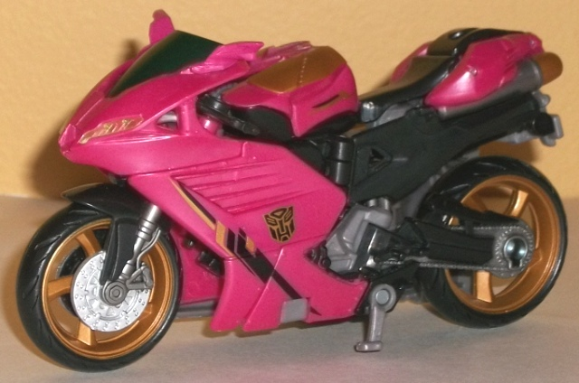
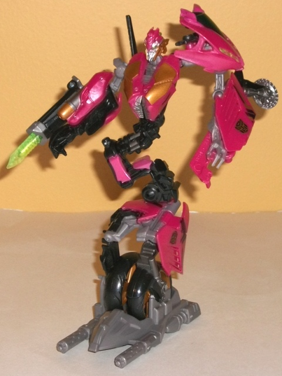
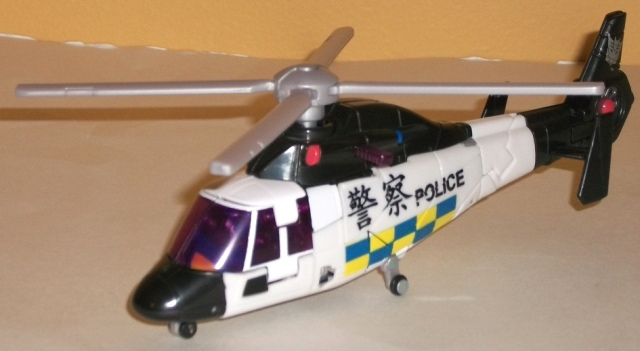
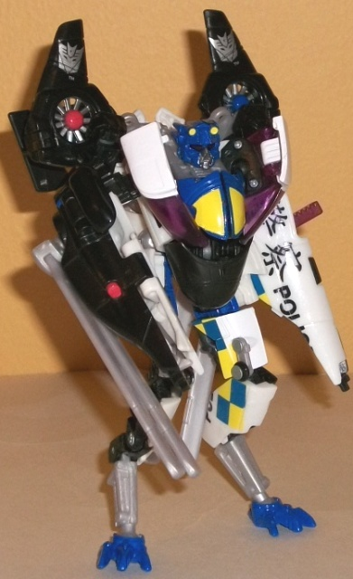

Rotorwash
Rumble [Target Exclusive]
Rotorwash
Rumble [Target Exclusive]
Set Price:
$20 U.S.
Overall Rating
: 7.1
(NOTE: Because this set is composed of repaints,
this is not a full-blown review. This mainly covers any changes made to
the set and the color scheme, and merely compares it to the original versions
of these molds. For a review on the original RotF deluxe Arcee mold, go
here
.
For a review on RotF Blazemaster-- the mold used for Tailwhip-- go
here
.)
Arcee


Allegiance
: Autobot
Size
: Deluxe
Difficulty of Transformation:
Medium
Color Scheme
: Black, Dull rosy pink,
moderately light milky gray, and some pale metallic bronze, silver, clear
plastic, and transparent light green
Individual Rating
: 7.7
This redeco of Arcee
technically has the same overall scheme-- a light red-pink, and black color
scheme with some colors to serve as secondary and/or accent colors-- but
it's amazing just how much BETTER-looking it is than the RotF mass-release
of the same mold and character. For one, the pink is much less of a bland
light red this time around and more of an actual pink, but not "bright
super-girly pink" or anything like that-- it's subdued like a dull rose,
and more or less akin to what you'd likely find on a female's motorcycle.
The black still contrasts with it quite well, but gray is added in as a
near-vital third color, to break up Arcee's colors a bit more (particularly
in robot mode). Granted, it is a rather bland shade of light milky gray,
but except for the sidecar (which is, unfortunately, completely unpainted)
it's not used so much to the point where I think it's overdone. The dull
copper paint apps are probably the highlight of the toy, as they're just
the PERFECT contrast to both the pink and black, and go well with the silver
paint apps as well. The nice symbol designs on the sides of Arcee's vehicle
mode are also quite nice-- mechanical-looking in nature, while not overtly
alien. I also particularly like the touches of transparent light green
in her robot mode (in her eyes and on her sword), which make a great accent
color and, again, contrast well with the pink and black.
No mold changes have
been made to Rotorwash Rumble Arcee.
Arcee Tech Specs
:
Strength: 8.0
Intelligence: 6.0
Speed: 8.0
Endurance: 5.0
Rank: 5.0
Courage: 7.0
Fireblast: 7.0
Skill: 9.0
Tailwhip


Allegiance:
Decepticon
Size
: Deluxe
Difficulty of Transformation
: Hard
Color Scheme
: White, black, light
milky gray, and some transparent purple, dark glossy blue, moderately light
red, bright light orange, and bright "safety" yellow
Individual Rating
: 6.4
Tailwhip here has a color
scheme more-or-less reminiscient of a Hong Kong helicopter, complete with
the same general details that Barricade in the
Hunters'
Rumble
set has. The "POLICE" in English as well as Chinese letters
on the side, as well as the dark blue-and-yellow patches on the predominately
white-and-black color scheme pretty much cement that this toy and Hunters'
Rumble Barricade are meant to team up together. The yellow is so light
it clashes with the white a bit, and the light milky gray plastic is (as
almost always) boring, but otherwise the colors go together pretty good.
Granted, white and black isn't exactly the most original of schemes, but
it works. What really catches my attention regarding Tailwhip's color scheme,
however, is the dark glossy blue-- it's simply a magnificent shade of the
color, and works perfectly as an accent color, particularly on the robot
chest and head. The transparent purple windows-- though not exactly in
keeping with the whole "emergency vehicle" motif-- also look great and
provide some great contrast against the white. The bits of bright orange
on the chest, as as well as the alternating blue-and-red lights on the
top and rear of the helicopter mode, serve the dual purpose of providing
Tailwhip with a few more colors as well as helping out the whole "emergency
'copter" schtick even in robot mode-- definitely no complaints when it
comes to Tailwhip's paint apps.
No mold changes have
been made to Tailwhip.
Tailwhip Tech Specs
:
Strength: 10.0
Intelligence: 8.0
Speed: 6.0
Endurance: 8.0
Rank: 8.0
Courage: 7.0
Fireblast: 7.0
Skill: 6.0
With the "Rotorwash Rumble"
set, there's definitely some good points and bad points about it. If you
consider just the molds themselves, well, neither of them were near the
best of what the RotF line had to offer, particularly Tailwhip. However,
the color schemes on both are great, with a pretty good amount of nice,
attractive paint apps on both. Arcee in particular has the best color scheme
I've seen on her mold as of this writing (9/12), while Tailwhip just comes
a hair short of surpassing
RotF Evac's
color
scheme (and the latter is pretty darned hard to find for a reasonable price).
So if you want these two molds and don't have them, this is definitely
the set to pick up-- but if you're not a mold completist, this is an easy
pass.
Rotorwash Rumble Bio:
Not even the most powerful Autobot can
resist being pinned by the full force of the wind generated by Tailwhip
when he hovers. He creates a vortex beneath him strong enough to crush
most human vehicles. Autobots are helpless in his rotor wash. Arcee twists
and struggles to bring her weapons to bear, because her only chance is
to land a solid hit on the blades of the evil robot above her.
Reviews by Beastbot
Back to
Transformers: Autobot Alliance Index